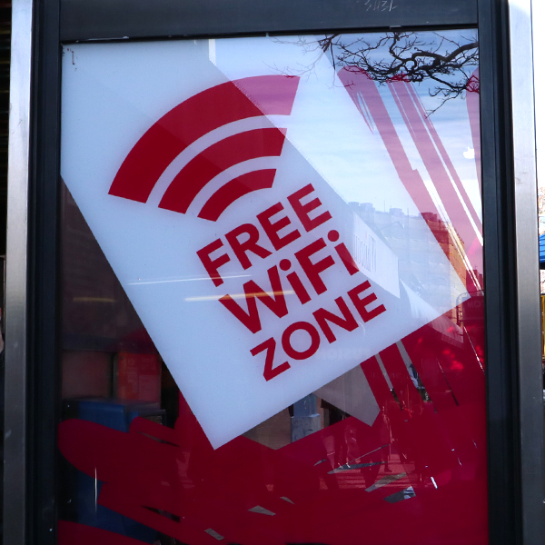
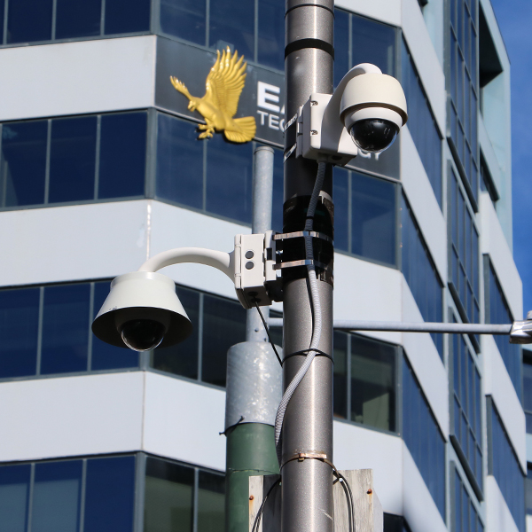

Fibre

In central areas of Wellington, Chorus is rolling out Fibre optic cables for all to see.
WiFi Zones
One of the most evident instances of WiFi Zones is undoutedly Sparks Free WiFi booths.
Cameras
Cameras facilitate various purposes in the CBD from regulating and analyzing traffic, to security.